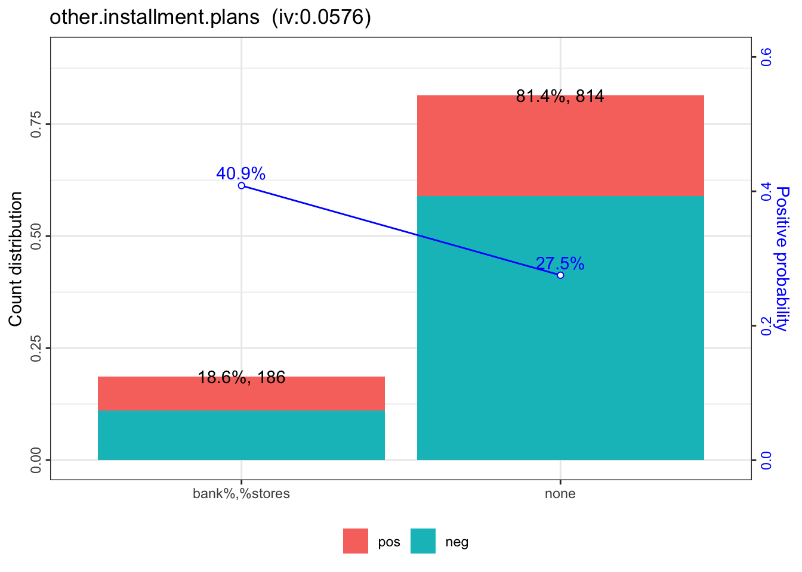

为了提高评分卡模型的开发效率，我为 R 语言社区贡献了一个开源项目 scorecard 包 (Github, CRAN)。该 R 包提供了评分卡开发过程中的常用功能，包括变量粗筛、分箱与woe转换、模型评估、评分刻度转换等。
评分卡模型的开发流程通常包括以下五个主要步骤：数据准备、WOE分箱、模型拟合、模型评估、评分卡刻度。下面结合 scorecard 包完成一个简单的评分卡模型开发案例。更加详细的评分卡模型开发介绍请参考幻灯片。
数据准备
首先加载 scorecard 包，并载入包内自带的德国信贷数据集。该数据集包含了1000个借款人的信贷数据，20个 X 特征与1个 Y 值。其详细信息参见 UCI 的德国信贷数据集网站。
library(scorecard)
# load germancredit data
data(germancredit)载入数据集后，可先通过变量的 IV 值、缺失率以及单类别率对 X 特征进行初步筛选。var_filter 函数默认删除信息值小于0.02、缺失率大于95%或单类别比例大于95%的变量。var_filter 函数还能够人为设定需要删除或保留的变量，以及够返回变量删除的原因列表。
# filter variable via missing rate, iv, identical rate
dt = var_filter(germancredit, y = 'creditability')## [INFO] filtering variables ...将经过初筛的数据集拆分为训练集与测试集。在 split_df 函数中如果指定了 y 变量，那么将基于 y 变量分层拆分，如果没有指定，则随机拆分数据集。ratio 为拆分后两个数据集的样本量占比。 seed 为随机种子，用于重现拆分的样本。
# breaking dt into train and test
dt_list = split_df(dt, y="creditability", ratio = 0.6, seed = 30)
label_list = lapply(dt_list, function(x) x$creditability)WOE分箱
接下来对数据集进行分箱与 woe 值转换。由于这个数据集样本量比较小，我们可以直接对全样本进行分箱处理。如果数据量允许，应该使用训练集进行分箱，并使用训练集得到的 woe 值对其他数据集进行woe替换。
woebin 函数提供了树形 tree、卡方合并 chimerge、等宽 width 与等高 freq 四种分箱方法。以树形分箱为例，默认情形是当信息值增益率 stop_limit 小于0.1, 或分箱数 bin_num_limit 大于8(缺失值除外)时停止分箱，同时确保每一个分箱的样本占比 count_distr_limit 不小于5%。当然还能够通过 breaks_list 手动设定分箱节点。
woebin 函数输出的结果为多个 data.frame 组成的 list，可通过 data.table::rbindlist 或 dplyr::bind_rows 函数合并为一个数据框然后保存。当然 woebin 函数也能够直接输出一个由分箱切割点组成的 list 并保存，下次使用时直接通过 woebin 函数对 breaks_list 参数对新的数据集进行分箱。
woebin_adj 函数可逐个观察每个变量的分箱情况。如果不满意默认的分箱结果，可以手动修改。最终返回一个经过手动调整的分箱节点。
分箱之后，需要使用 woebin_ply 函数将训练集与测试集转换为对应的 woe 值。
# woe binning
bins = woebin(dt, "creditability", print_step=0)## [INFO] creating woe binning ...bins[[12]]## variable bin count count_distr good bad badprob woe bin_iv total_iv breaks
## 1: other.installment.plans bank%,%stores 186 0.186 110 76 0.4086 0.4776 0.04594 0.05759 bank%,%stores
## 2: other.installment.plans none 814 0.814 590 224 0.2752 -0.1212 0.01166 0.05759 none
## is_special_values
## 1: FALSE
## 2: FALSEwoebin_plot(bins[[12]])## $other.installment.plans
# converting train and test into woe values
dt_woe_list = lapply(dt_list, function(x) woebin_ply(x, bins))## [INFO] converting into woe values ...模型拟合
当获得了 woe 值替换之后的数据集，可以使用逻辑回归进行拟合，并通过AIC、LASSO等方法对变量进一步筛选。下面使用基于 AIC 的逐步回归进一步筛选变量，最终得到了一个拥有13个变量的模型。
# lr
m1 = glm( creditability ~ ., family = binomial(), data = dt_woe_list$train)
# vif(m1, merge_coef = TRUE) # summary(m1)
# Select a formula-based model by AIC (or by LASSO for large dataset)
m_step = step(m1, direction="both", trace = FALSE)
m2 = eval(m_step$call)
vif(m2, merge_coef = TRUE) # summary(m2)## variable Estimate Std. Error z value Pr(>|z|) gvif
## 1: (Intercept) -0.9448 0.1094 -8.639 0.0000 NA
## 2: status.of.existing.checking.account_woe 0.7756 0.1380 5.619 0.0000 1.042
## 3: duration.in.month_woe 0.7963 0.2291 3.476 0.0005 1.181
## 4: credit.history_woe 0.8308 0.2035 4.082 0.0000 1.064
## 5: purpose_woe 0.8632 0.2755 3.133 0.0017 1.043
## 6: credit.amount_woe 0.7669 0.2838 2.702 0.0069 1.251
## 7: savings.account.and.bonds_woe 0.8545 0.2606 3.279 0.0010 1.039
## 8: installment.rate.in.percentage.of.disposable.income_woe 1.8621 0.6822 2.730 0.0063 1.094
## 9: other.debtors.or.guarantors_woe 2.1018 0.8922 2.356 0.0185 1.037
## 10: age.in.years_woe 1.0154 0.3001 3.383 0.0007 1.033
## 11: other.installment.plans_woe 0.7623 0.4347 1.754 0.0795 1.060
## 12: housing_woe 0.7610 0.3665 2.077 0.0378 1.035模型评估
通过逻辑回归获得各变量的拟合系数之后，可以计算出各个样本为坏客户的概率，然后评估模型的预测效果。 perf_eva 函数能够计算的评估指标包括 mse, rmse, logloss, r2, ks, auc, gini，以及绘制多种可视化图形 ks, lift, gain, roc, lz, pr, f1, density。
## predicted proability
pred_list = lapply(dt_woe_list, function(x) predict(m2, x, type='response'))
## performance
perf = perf_eva(pred = pred_list, label = label_list)## [INFO] The threshold of confusion matrix is 0.3133.
评分卡刻度
当我们获得了各个变量的分箱结果，并且确定了最终进入模型的变量以及系数，则可以创建标准评分卡。
有了评分卡之后，可用于对新样本进行打分，从而评估该客户的信用水平，并最终作出审批决策。
最后，评分卡模型的开发过程，还需要对模型的稳定性进行评估，即计算psi。
## scorecard
card = scorecard(bins, m2)
## credit score
score_list = lapply(dt_list, function(x) scorecard_ply(x, card))
## psi
perf_psi(score = score_list, label = label_list)## $psi
## Null data.table (0 rows and 0 cols)以上代码均可以在该项目的主页获取。